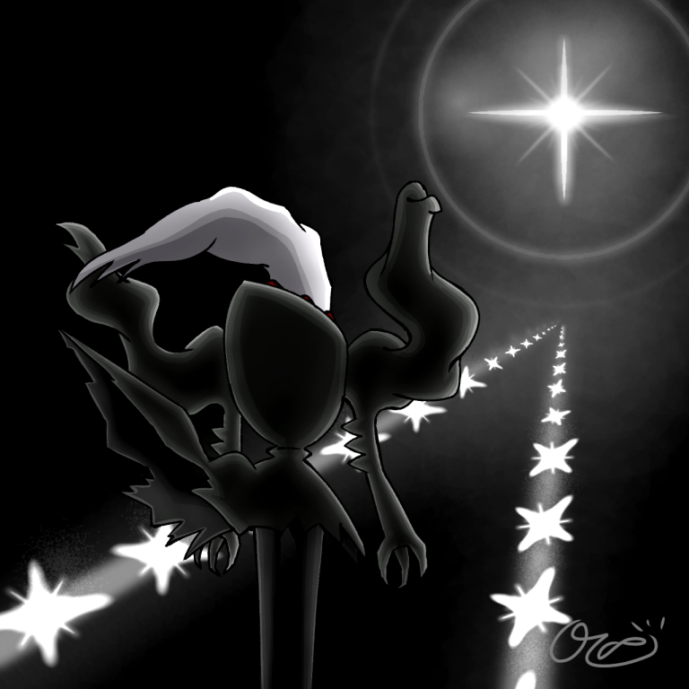
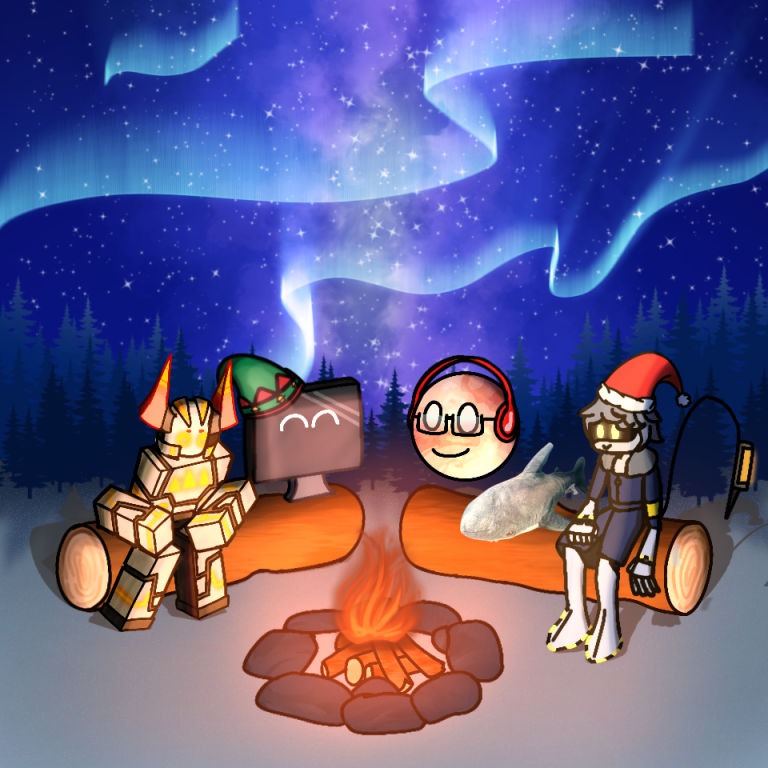
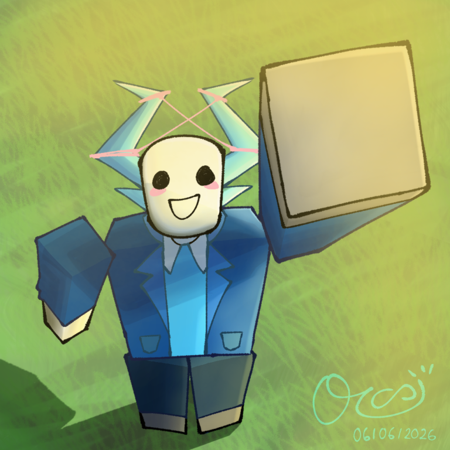
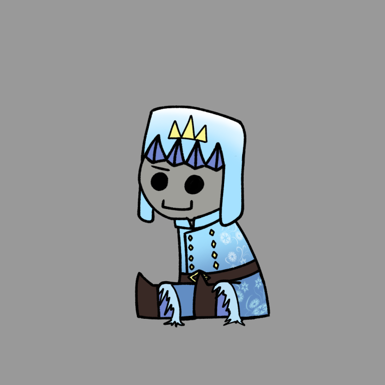

Mozes Alfeus Cahya
Murid SMA Santa Laurensia Suvarna Sutera
mouzescahya@gmail.com
+62 877-1484-0857
Dakota 2 No. 16, Suvarna Sutera, Kec. Sindang Jaya, Kab. Tangerang, Banten
Ringkasan Diri
Halo! Panggil saya Mozes. Aku adalah seorang siswa yang sekarang menduduki
kelas 11
di SMA Santa Laurensia Suvarna Sutera dan memiliki ketertarikan dalam bidang digital dan kreatif.
Karya-karya yang saya sukai menginspirasi saya sehingga bagian yang paling saya dalami adalah menulis,
menggambar, dan koding. Saya sangat menghargai rasa penasaran, pemikiran kritis, dan keterbukaan, sehingga
saya berusaha yang terbaik untuk menghayati nilai-nilai tersebut. Saya selalu menantikan memperluas
pengetahuan serta mengembangkan kemampuan saya!
Pendidikan
2025 - Sekarang
SMA Santa Laurensia Suvarna Sutera
2022 - 2025
SMP Santa Laurensia Suvarna Sutera
2016 - 2022
SD Tunas Bangsa Citra 3
2014 – 2016
TK Tunas Bangsa Citra 3
Hobi dan Hal Lain yang Saya Lakukan
- Menggambar - Lihatlah beberapa gambar yang sudah saya buat di bagian "Karya-Karya Saya".
- Menulis - Sejauh ini saya sudah menulis dua cerita fiksi penggemar (fanfic) yang bisa ditemukan di situs Archive of Our Own. Judul mereka adalah The Future Below dan An August Advent.
- Memainkan gitar bas - Meski saya masih pemula, saya sangat menikmati memainkan alat musik ini.
- Mengobrol - Siapa yang tidak suka mengobrol? Percakapan dapat memberimu banyak pengetahuan dan membuat Anda semakin dekat.
- Koding - Saya adalah Administrator di Wiki SolarBalls. Meski tugasku biasa hanya administratif, seperti merapikan halaman, templat dan modul yang kadang saya buat membutuhkan kode.
Karya-Karya Saya



